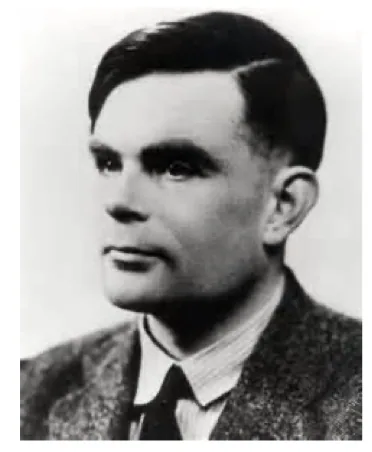
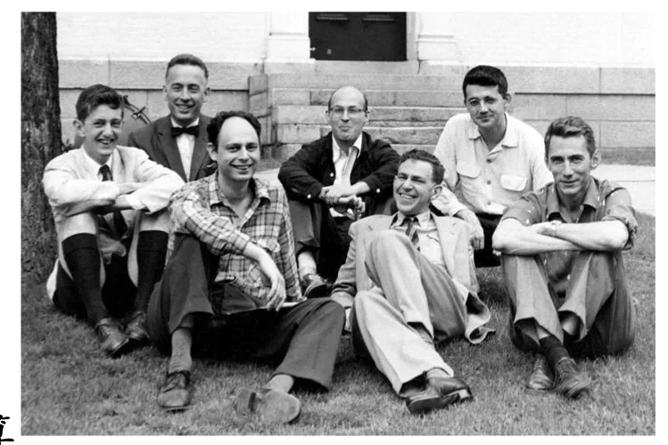
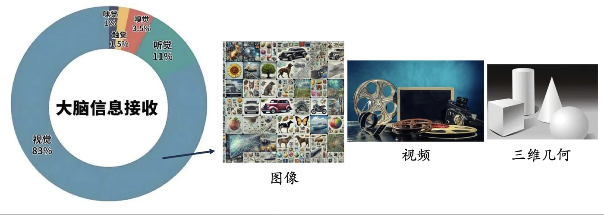
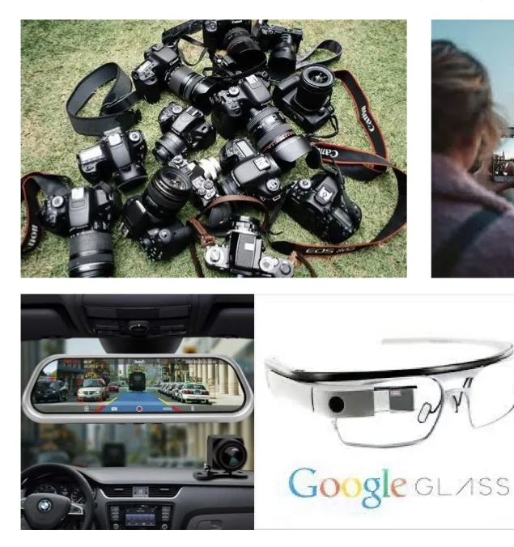
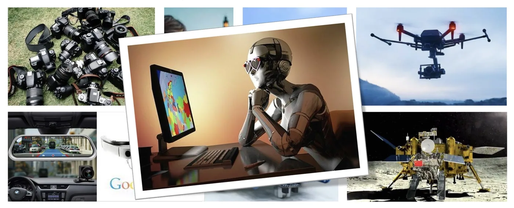

计算机视觉 · 第 1 章 绪论
1.1 计算机视觉的概念
这一节要给「计算机视觉」定位：它不是凭空长出来的一门技术，而是人工智能发展到「感知」这一步时必然要解决的核心问题。线索分三步——先由图灵测试讲到人工智能的诞生，看清这门学科是什么、又分哪几个层次；再看人工智能的研究版图里计算机视觉站在哪里；最后落到计算机视觉本身的定义，以及它要处理的是哪几类数据。
1. 从图灵测试到人工智能
要讲清楚计算机视觉，得先讲清楚它的母学科。1950 年，艾伦·麦席森·图灵（Alan M. Turing）提出了著名的图灵测试：如果一台机器在 5 分钟内回答出人类测试者提出的一系列问题，并且其中超过 30% 的回答让测试者误认为是人类所答，那么就认为这台机器具有智能。
这个判据的巧妙之处在于，它绕开了「智能到底是什么」这个说不清的问题，转而用一个可操作的、外部的行为标准来代替——机器不必长得像人，也不必真的像人那样思考，只要在对话中表现得和人不相上下就够了。

六年之后的 1956 年，在达特茅斯会议上，麦卡锡、明斯基、罗彻斯特和香农等人首次提出「人工智能」这一术语，确立了人工智能作为一门科学的任务和完整路径。这次会议标志着「人工智能」的正式诞生——从此它不再是一句口号，而是一门有目标、有方法、有共同体的学科。
从那时起到现在，人工智能技术的发展大致走过三个阶段：
- 计算智能：机器能对信息进行存储和计算；
- 感知智能：机器能听会说、能认会看；
- 认知智能：机器能理解、会思考。

计算机视觉正处在第二个阶段——感知智能。它要解决的问题是「能认会看」，也就是把机器从「会算」推进到「会看」。这一步为什么难，后面几节会逐步展开。
2. 人工智能的研究版图
感知智能不是孤立的。按朱松纯《浅谈人工智能》的梳理，人工智能的研究领域大致可以分成六个方向：
- 计算机视觉；
- 自然语言理解与交流（如语音的识别、合成）；
- 认知与推理（包含各种物理和社会常识）；
- 机器人学（机械、控制、设计、运动规划、任务规划等）；
- 博弈与伦理（包括对抗与合作、机器人与社会融合等议题）；
- 机器学习（各种统计的建模、分析工具和计算的方法）。
这份清单里有两点值得留意。一是计算机视觉被列在首位——视觉是人类获取外界信息最主要的通道，机器要进入真实世界，第一步同样是「看得见」。二是机器学习与其余五个方向不是并列关系：它提供的是一套建模、分析和计算的方法，这些方法会渗透到包括计算机视觉在内的每一个方向里去。这也是本门课后半程要花大力气讲神经网络的原因。
如果把人工智能的两大「感知入口」放在一起看，会更清楚计算机视觉的位置：自然语言理解负责把机器与语言接通，计算机视觉负责把机器与图像和场景接通。二者一左一右，共同构成机器感知外部世界的基础。
3. 计算机视觉：让机器「看」
为什么视觉值得单独拿出来做一门学科？一个常被引用的数字是：人类获取信息的 83% 来自视觉。承载视觉信息的媒体类型包括图像、视频和三维几何等，它们构成了计算机视觉的输入。

由此可以给出计算机视觉的定义：计算机视觉是一门研究如何使机器「看」的科学。
这句话里的关键词是「看」。对人来说，看是一件毫不费力的事；但对机器来说，它拿到的只是一堆按行列排好的像素数值，既没有物体、也没有边界，更谈不上「这是什么」。计算机视觉要做的，就是从这些数值里一步步恢复出信息与语义——图像里有什么、在哪里、在做什么、彼此是什么关系。


这里顺带把一个容易混淆的边界划清楚：图像处理关注的是图像本身的变换——去噪、增强、压缩，输入是图像，输出往往还是图像；计算机图形学走的是相反的方向——从三维模型和光照参数出发，渲染出图像。计算机视觉夹在两者之间，输入是图像，输出是对场景的理解。本课程第 2、3 章讲的基本图像处理与边缘检测，正是这条链路的起点。
本节小结
- 1950 年图灵提出图灵测试，用「5 分钟内超过 30% 的回答骗过测试者」这一可操作标准来判断机器是否具有智能；1956 年达特茅斯会议首次提出「人工智能」这一术语，标志这门学科的正式诞生。
- 人工智能技术发展分三个阶段：计算智能（能存会算）、感知智能（能听会说、能认会看）、认知智能（能理解、会思考）。计算机视觉属于感知智能。
- 人工智能的六个研究领域是计算机视觉、自然语言理解与交流、认知与推理、机器人学、博弈与伦理、机器学习；计算机视觉列在首位，机器学习则为其提供方法支撑。
- 人类获取信息的 83% 来自视觉，承载视觉信息的媒体类型包括图像、视频与三维几何。
- 计算机视觉是一门研究如何使机器「看」的科学：输入是图像，输出是对场景的理解。它向下区别于图像处理（图像进、图像出），向上区别于计算机图形学（模型进、图像出）。